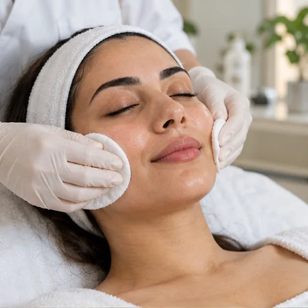
بشرة أكثر صحة… وجمال أكثر ثقة
عناية طبية متكاملة
لجمالك الطبيعي
في عيادة لورا نجمع بين الخبرة الطبية، التقنيات الحديثة، والخطط العلاجية المخصصة لنمنح بشرتك عناية دقيقة ونتائج طبيعية تناسبك.
فريق طبي متخصص
تقنيات حديثة
خطط عناية مخصصة
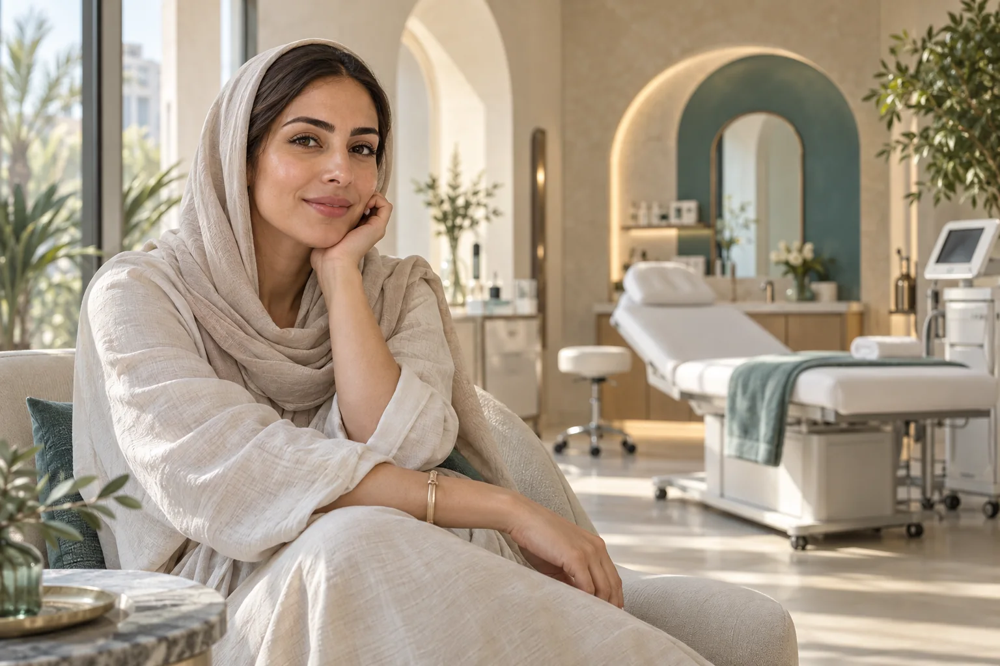
ابدئي باستشارة تناسب احتياجكالقاهرة، مصر · مفهوم عيادة افتراضي
لأن كل بشرة لها حكاية مختلفة
تقييم شخصي عناية لطيفة خصوصية كاملة
عناية تناسب احتياجك
خدماتنا التجميلية والطبية
مجموعة من الخدمات المصممة لتلبية احتياجات البشرة المختلفة ضمن تجربة عناية متكاملة.
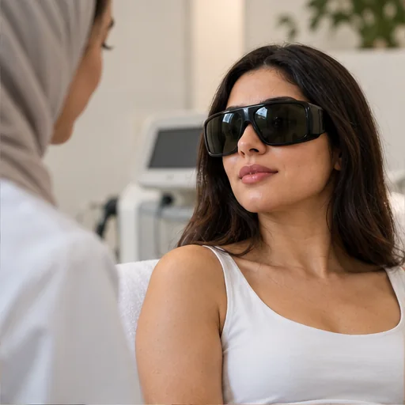
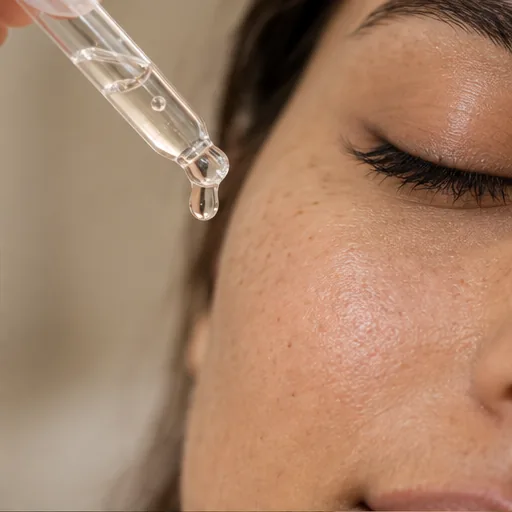
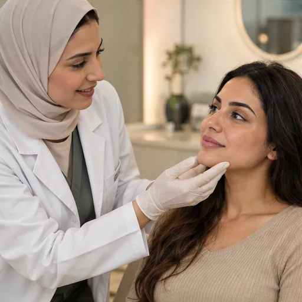
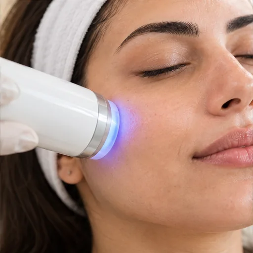
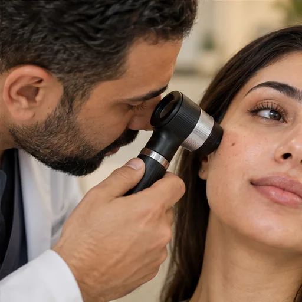

العناية بالتفاصيل تصنع الفرق
لماذا تختارين
عيادة لورا؟
نهتم بالتجربة كاملة؛ من لحظة الاستشارة الأولى وحتى المتابعة، مع التركيز على الخصوصية والراحة والوضوح في كل خطوة.
- خطط عناية مخصصة
- فريق طبي ذو خبرة
- أجهزة وتقنيات حديثة
- بيئة مريحة وخصوصية كاملة
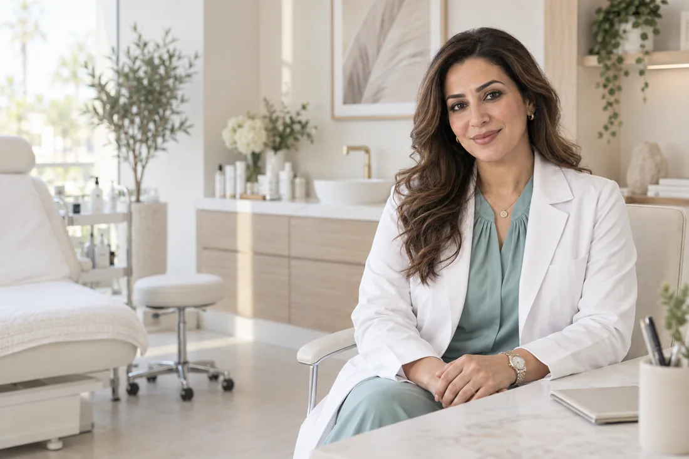
تصوّر بصري لشخصية افتراضيةرعاية تبدأ بالاستماع
د. لورا الأحمدي
استشارية الجلدية والتجميل · شخصية افتراضية
«نبدأ دائمًا بفهم احتياج البشرة أولًا، ثم نناقش الخيارات والخطة الأنسب لكل حالة.»
- استشارات متخصصة
- خطط متابعة
- عناية فردية
- معايير سلامة وخصوصية
تجربة بصرية توضيحية
قبل وبعد العناية
حرّكي المؤشر للمقارنة. هذه صور مُنشأة لأغراض العرض فقط، وليست حالات أو نتائج طبية حقيقية.
مظهر التصبغات
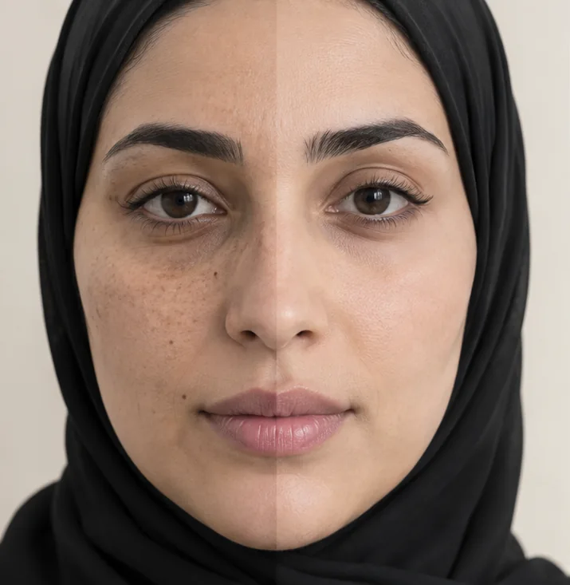
قبلبعدتصوّر توضيحي — لا يمثل نتيجة علاجية
نضارة البشرة
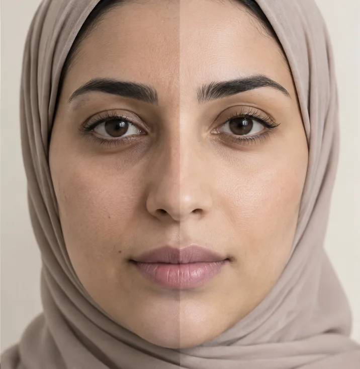
قبلبعدتصوّر توضيحي — لا يمثل نتيجة علاجية
ملمس البشرة
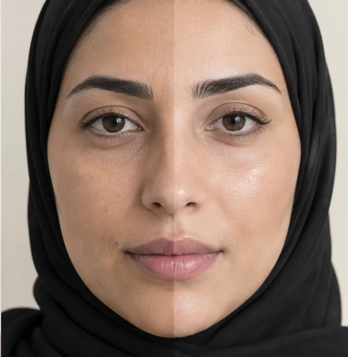
قبلبعدتصوّر توضيحي — لا يمثل نتيجة علاجية
تجربة مريحة تبدأ من أول تواصل
آراء عميلاتنا
أمثلة نصية لعرض التصميم؛ ليست تقييمات أو شهادات حقيقية.
إجابات واضحة قبل الزيارة
الأسئلة الشائعة
كل حالة مختلفة؛ ابدئي باستشارة طبية لفهم الخيارات المناسبة لك.
لديك سؤال؟ ابدئي باستشارةهل الإجراءات التجميلية مناسبة للجميع؟
تختلف ملاءمة أي إجراء حسب الحالة، لذلك تبدأ الزيارة بتقييم واستشارة قبل تحديد الخطة المناسبة.
كم تستغرق الجلسة؟
تختلف المدة حسب نوع الخدمة، ويتم توضيح الوقت المتوقع قبل الموعد.
هل أحتاج إلى فترة نقاهة؟
يعتمد ذلك على نوع الإجراء. قد لا تحتاج بعض الخدمات إلى فترة راحة، بينما تتطلب خدمات أخرى تعليمات محددة.
كيف أختار الخدمة المناسبة لبشرتي؟
يمكن البدء باستشارة لتقييم احتياج البشرة ثم مناقشة الخيارات المناسبة مع مختص.
كيف يمكنني حجز موعد؟
في صفحة العيادة الفعلية يمكن إرسال طلب الحجز من النموذج أو التواصل عبر واتساب. هذه نسخة العرض، لذلك لا يتم إرسال الطلبات أو تأكيد المواعيد.
هل بياناتي محفوظة؟
لا. هذه معاينة تصميم، ولا تُرسل البيانات أو تُحفظ. قبل الإطلاق الفعلي، يجب اعتماد سياسة الخصوصية وطريقة التواصل.
الخطوة الأولى تبدأ بسؤال
ابدئي رحلتك نحو عناية أكثر ثقة
احجزي استشارتك وتعرّفي على الخيارات المناسبة لاحتياجك.